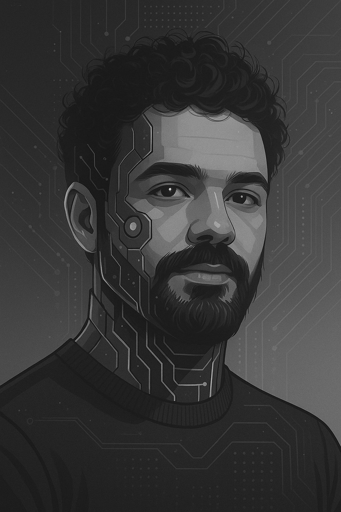
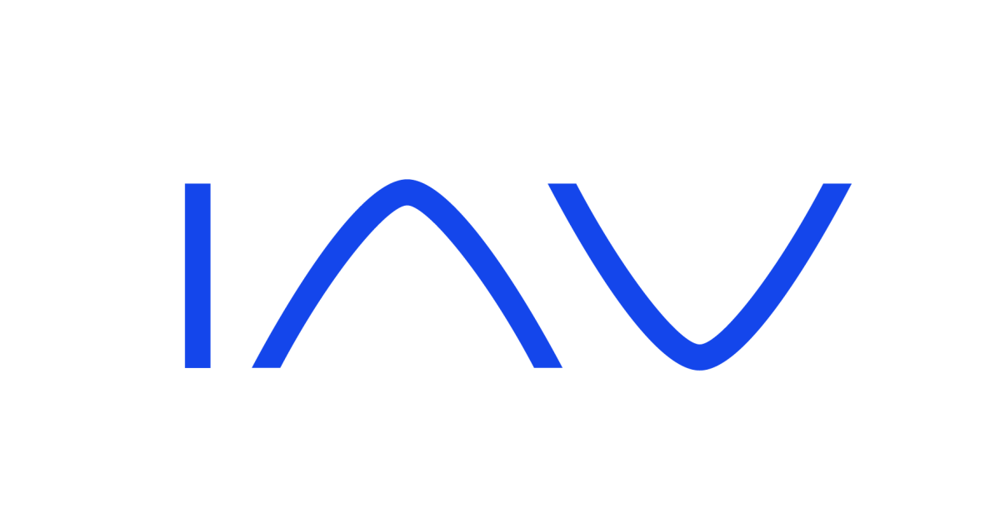

Mahmoud Maan
Robotics & AI | Physical AI | M.Sc. Robotics and Autonomous Systems
I am an AI Robotics and Perception Engineer with a strong focus on building intelligent systems that bridge perception, learning, and real-world interaction. I hold an M.Sc. in Robotics and Autonomous Systems from the University of Lübeck, Germany, and have hands-on experience across autonomous driving, robotic manipulation, and physical AI. My work includes deploying real-time perception models on edge devices such as NVIDIA Jetson platform, fine-tuning vision-language and vision-language-action models for embodied robots, and developing multimodal and agent-based AI systems. With experience in both industrial and research environments including automotive, robotics, and GenAI, I enjoy translating cutting-edge research into robust, deployable systems for real-world autonomous systems.

Experience
AI and Robotics Research Engineer
KIA Group - TH Lübeck | Lübeck, Germany
Fine-tuning and deploying Vision-Language-Action models for robotic manipulation, developing RAG systems, and supervising research projects.
Graduate Research Student
Universität zu Lübeck | Lübeck, Germany
Deployed and optimized object detection models on edge devices and conducted research on neural network quantization techniques.

Master Thesis Student
IAV Fahrzeugsicherheit GmbH | München, Germany
Compared vision transformers and CNNs for automotive instance segmentation and fine-tuned foundation models for synthetic datasets.
Machine Learning/Computer Vision Intern
Robert Bosch GmbH | Stuttgart, Germany
Developed an AI-powered tool for automated solder joint analysis in automotive ECUs using semantic segmentation and model deployment.
Robotics Engineer
CUBII Industrial Solutions | Cairo, Egypt
Developed software and HMI visualizations for real-time control of automated packaging machines and designed hardware control panels.
Education
M.Sc. Robotics and Autonomous Systems
University of Lübeck, Germany
Major Subjects: Robot Learning, Perception for Autonomous Vehicles, Reinforcement Learning, Computer Vision, Deep Learning, Vehicles Dynamics and Control
B.Sc. Mechatronics Engineering
Mansoura University, Egypt
Major Subjects: Dynamics and Control of Robots, Advanced Robotics, Computer Vision, Artificial Intelligence, Control System, Modeling and Simulation